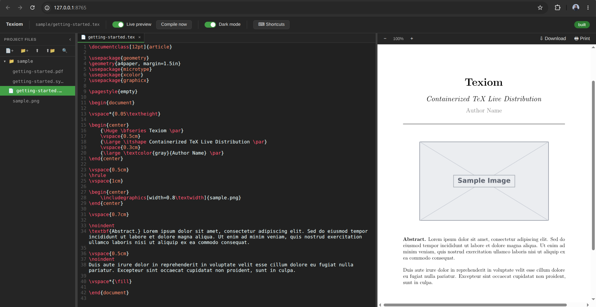

Features
No local LaTeX install
A Docker image with TeX Live, latexmk and biber does the building.
Small first download
A base image of roughly 350 MB; add science, templates, fonts or languages with one command, once.
Clear errors
A missing package is named, together with the pack that provides it.
Per-project config
A texiom.toml next to your .tex file stores the engine, main file and extra packages.
Three engines
pdflatex, xelatex and lualatex, including fontspec and custom fonts.
Live browser editor
Source and PDF side by side, auto-recompile, clickable build errors, SyncTeX jumps and dark mode.
Watch mode
Rebuild on every save while you use your own editor.
GitHub Action
Build your LaTeX PDF in CI with one step.
Dev Container
VS Code with LaTeX Workshop preconfigured.
Install
Requires Docker and Bash. On Windows, use WSL2.
# Debian / Ubuntu
sudo dpkg -i texiom_*.deb
# Fedora / RHEL
sudo rpm -i texiom-*.rpm
# Any Linux
tar -xzf texiom-*-linux.tar.gz && cd texiom-*/ && sudo ./install.shPackages are on the Releases page.
Use
# compile a file
texiom --dir ~/my-paper --file paper.tex
# use XeLaTeX or LuaLaTeX
texiom --dir ~/my-paper --file paper.tex --engine xelatex
# rebuild on every save
texiom --dir ~/my-paper --file paper.tex --watch
# live editor in the browser
texiom --editSettings you repeat can live in a texiom.toml next to the file, so texiom -d . is enough:
file = "main.tex"
engine = "xelatex"
pdf_only = true
shell_escape = false
apt = ["inkscape"] # extra Ubuntu packages for this project
pip = ["pygments"] # extra Python packagesPacks: add only what you need
The first run downloads a small base image (core LaTeX, XeTeX, LuaTeX, biblatex and biber). Anything else is an optional pack, installed once and used by every project. texiom packs lists them and marks the ones you have.
texiom packs # list packs: science, publishers, fonts-extra, lang-*, minted, ...
texiom add science lang-arabic # install both, once for every project
texiom add # no names: pick from a numbered list
texiom remove science
texiom add full # every TeX Live collection (without the docs)If a build fails because something is not installed, Texiom tells you which pack provides it and offers to install it and build again:
The build failed because something is not installed:
- LaTeX package 'algorithm2e.sty' is not installed. It is provided by the pack 'science'.
Install with: texiom add science
Install 'science' now and build again? [Y/n]GitHub Action
- uses: actions/checkout@v4
- uses: MrzAhmadi/Texiom@main
id: texiom
with:
root_file: paper.tex
engine: xelatex
upload_artifact: true
- run: echo "Built ${{ steps.texiom.outputs.pdf_path }}"It reads texiom.toml too. For a much smaller pull, run the slim image and add what you need: image: ghcr.io/mrzahmadi/texiom:slim with apt: texlive-science.
FAQ
What is Texiom?
Texiom is an open source command line tool that compiles LaTeX documents inside a Docker container and offers a local live editor in your browser.
Is it an alternative to Overleaf?
For local, offline work, yes. It runs on your machine, your files stay on it, and the editor only listens on 127.0.0.1. It has no real-time collaboration and is not a full IDE.
How big is the first download?
Roughly 350 MB for the base image. Extra packs are downloaded only when you install them with texiom add.
My document needs a package that is not in the base image.
The build says which package is missing and which pack provides it. Install it once with texiom add <pack>; texiom add full installs everything.
Does it work on Windows or macOS?
Windows works through WSL2. Packages target Linux; the script itself needs Bash and Docker.
What license is it under?
MIT.